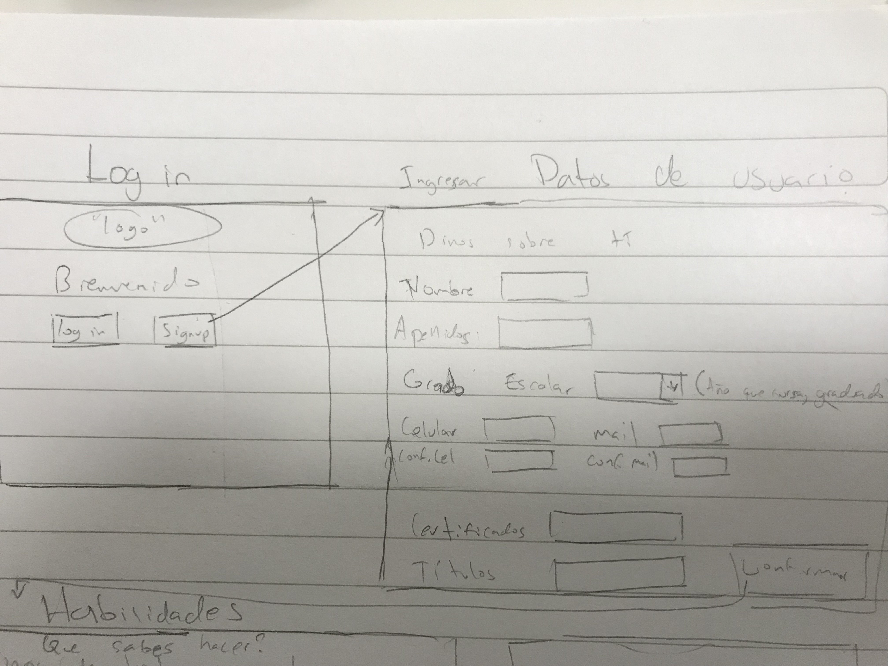
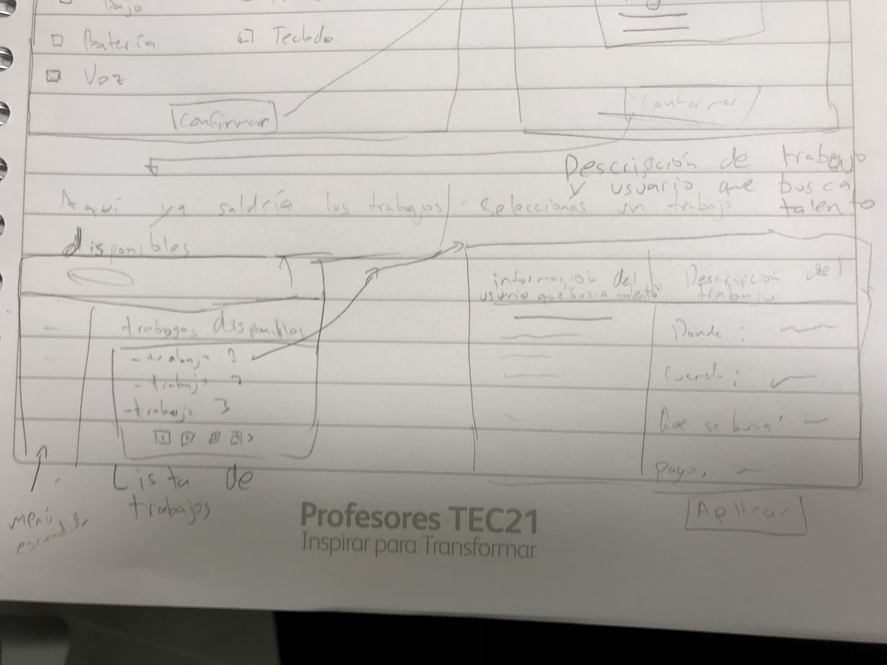
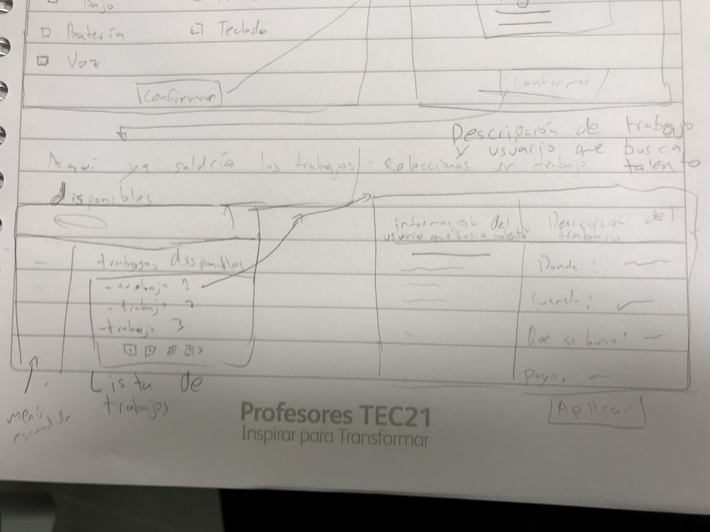
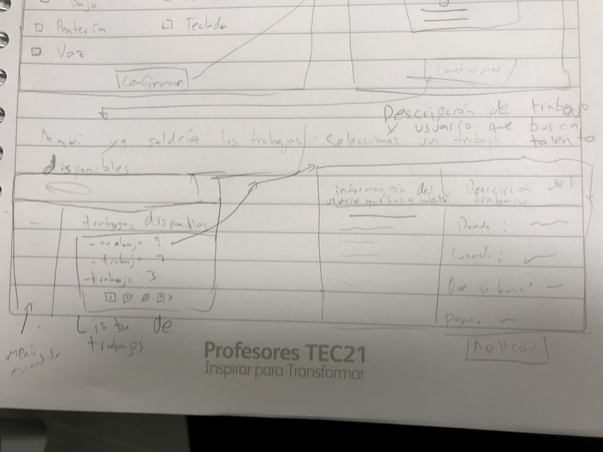

Diseño de app
 

Eduardo Alonso Herrera y Tomas Enciso
En una pagina web JavaScript es lo que ayuda a que la pagina funcioné, gracias a eso los botones sirven y con eso puedes hacer magia! Tambien tenemos JQuery que son muchas funciones que se metieron en una caja, y es mucho mas facil usar esas funciones.
Movidos. Esa palabra creo que es la que nos puede representar en este segundo termino, nos movimos pensando en el futuro del proyecto. Se estuvo conociendo gente y siempre se pidieron puntos de vista de gente que vive este problema dia a dia, creo que en el equipo hay motivación por ayudar y eso es de las cosas mas importantes. Se estuvieron investigando herramientas que no se veian en clase, que probablemente se podrian utilizar mas adelante. Eduardo Alonso Herrera.
Si yo me calificaría solo creo que me pondría un 75 porque siento que no avancé en las ideas que tengo pero también siento que la idea para la solución la eh estado trabajando desde antes de entrar a la clase, faltó organizarme un poco mas y apartar tiempo para en realidad avanzar en el proyecto. Tomas Enciso.
Durante esta etapa del proyecto se ha estado platicando con mas personas involucradas al problema en el que nos estamos enfocando; conocimos a una banda llamada "Ludox" y despues de platicar con ellos esperamos tener mas ideas para el proyecto. Se comenzo a estudiar Django, se ha pensado usar este framework de Python para poder aplicarlo mas adelante en el proyecto. Por la forma en la que nos hemos movido, yo creo que en esfuerzo tenemos un 25% y en el resultado tenemos alrededor de un 65% con todo lo que se ha aprendido y se pueda usar en el proyecto.
Experiencia, es una de las cosas que tenemos en conjunto Tomas y yo. Por un lado Tomas tiene experiencia en todo lo relacionado con la musica, y yo tengo cierta idea de lo que es trabajar web (aunque no soy un experto). Desde mi perspectiva, juntos podemos dar grandes resultados. Por otro lado tenemos diferentes conocimientos en todo lo que estamos involucrando en el proyecto, Tomas me ha enseñado mucho a mi (Eduardo) sobre musica, lo que no vemos y es fundamental en esta industria, y en todo lo que puedo con respecto a lo web, intento ayudarlo a él.
Lo que estamos buscando como solución sería un tipo de plataforma donde existirían dos tipos de usuarios. Uno es el músico que esta buscando trabajo ya sea algún proyecto en el estudio, tocar en una banda o también algún tipo de audición. Por otro lado están los usuario que están buscando músicos que contratar o los que están ofreciendo un trabajo, Esto como mencionado antes puede que busquen a un músico de sesión para solo grabar una o varias canciones con cierto instrumento, tal vez algún miembro de su banda no puede tocar ese fin de semana o se salió por completo y necesitan reemplazar a ese miembro pero no saben donde buscar. Esto creemos que resolvería dos problemas de estos dos usuarios, el hecho de que un músico necesita trabajar y los otros usuarios ocupan músicos para realizar sus proyectos.

Como hemos escuchado a varios estudiantes de música creo que nos diría que esta accesible y entendible. Pero la preocupación sería en lo legal, tenemos que expandir y aclarar como funcionaría todo eso y como están protegidos a cualquier plagio.